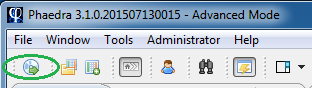
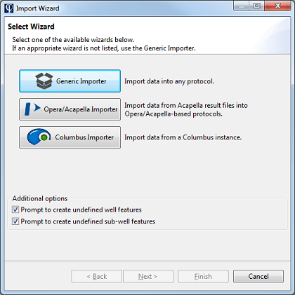
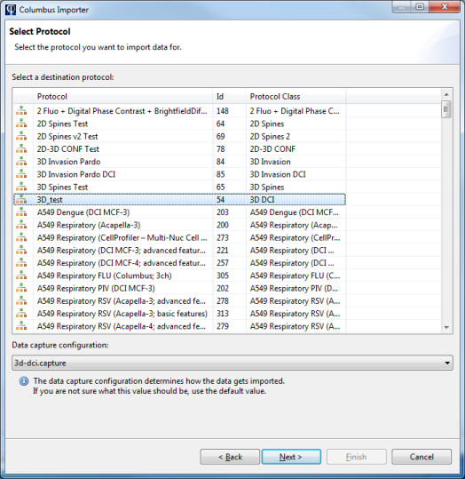
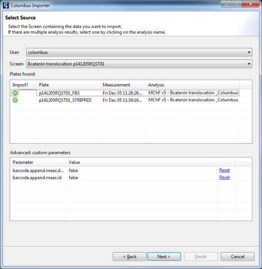
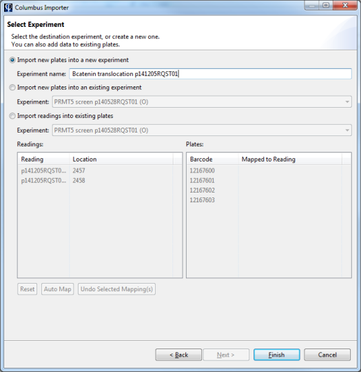
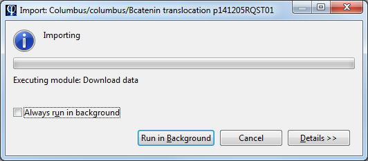

Nearly all functions in Phaedra require that you have plates imported first. This topic explains how to import plates, using the Import Wizard.
Before you can import plates, make sure that the following requirements are met:
Click on the Import Wizard button in the toolbar.

In this tutorial, plates will be imported from a Columbus instance. In the Import Wizard, select the Columbus Importer.

First, select the protocol where you want to import plates to.

In the next screen, a list of Columbus users and screens is presented. Select the user who owns the plates in Columbus, then select the screen containing the plates.
In the table below, all valid plates will be listed. A valid plate is a plate with at least one measurement and analysis result set.
To exclude a plate from the import, click on the green check icon, changing it into a red stop icon.

The plates will be inserted in a new or an existing experiment. You can select this in the next screen.
If you select an existing experiment, the plates will be added to it. Plates will never be overwritten during an import.

Select Finish to start the import. Depending on the size and number of plates, this may take a while. You can do other work in the meantime by clicking on Run in Background.
